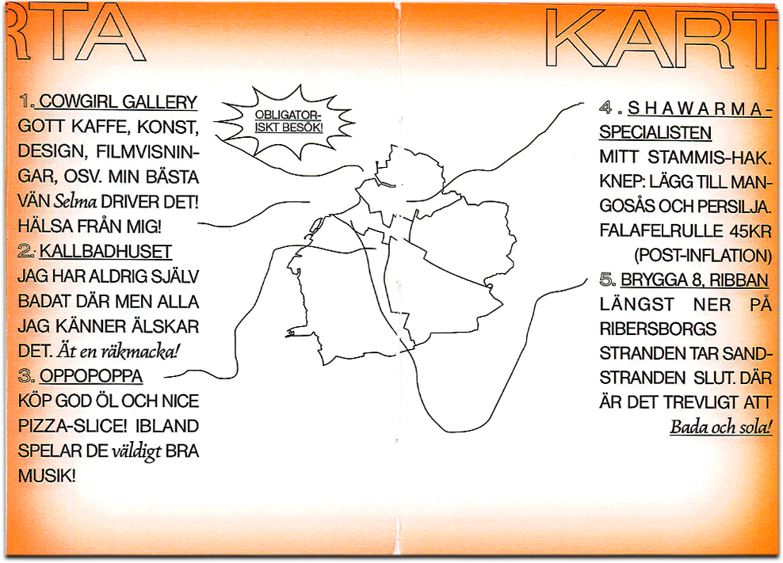
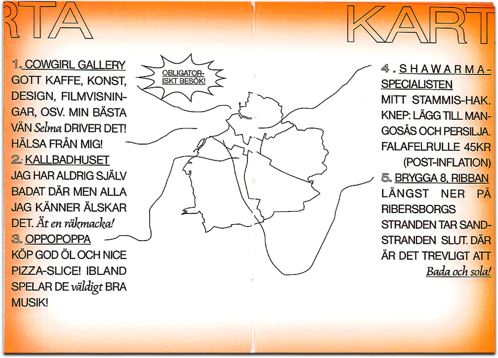

Work work work
Things I have made, tried, worked on, finished, or failed recently. All projects are for fun, some are also for work.


50x70 Poster / Lookbok for Fashion show at Beckmans
 


A6 Zine about Malmö, my home town.
Animation for a project about Nursery clinics.
Journal entry in VS Code.
Online invitation for Beckmans College of Design at Paris Fashion Week 2023
Bleached T-shirt.
Posters, posters, posters, posters. See them individually.